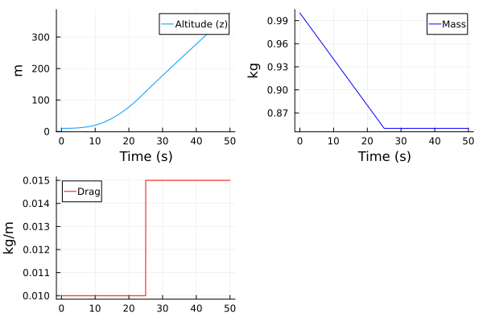
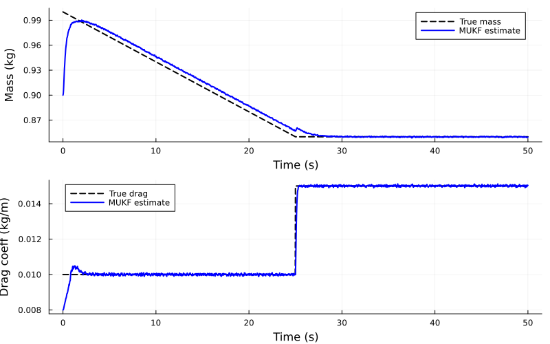
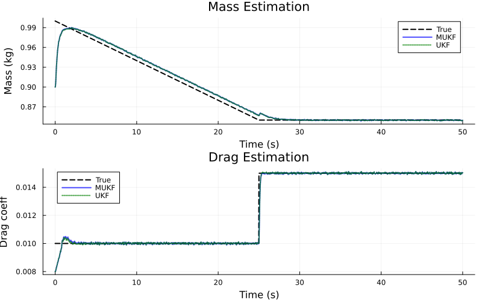

Joint state and parameter estimation using MUKF
The MUKF (Marginalized Unscented Kalman Filter) is an estimator particularily well suited to joint state and parameter estimation. When parameters have linear time evolution and enter multiplicatively into the system dynamics, MUKF explicitly separates the nonlinear state variables from linearly-evolving variables, leading to:
- Deterministic estimation: No particle randomness like for particle filters, making it suitable for gradient-based optimization of hyperparameters
- Computational efficiency: Uses fewer sigma points than UKF for the same state dimension
Problem: Quadrotor with Unknown Mass and Drag
We consider a simplified quadrotor model where the mass and drag coefficient are unknown and time-varying. By cleverly partitioning the state using reparameterizations $\theta = 1/m$ and $\varphi = \theta C_d$, we exploit a conditionally linear structure to achieve significant computational savings.
The system has 8 state dimensions total with the following partitioning:
- Nonlinear substate (3D): velocities $[v_x, v_y, v_z]$
- Linear substate (5D): positions $[x, y, z]$, inverse mass $\theta = 1/m$, and mass-scaled drag $\varphi = \theta C_d$
The key insight is that positions evolve linearly given the velocities ($\dot{x} = v_x$), and velocity dynamics depend linearly on both $\theta$ and $\varphi$. This clever parameterization reduces sigma points from 17 (for full 8D UKF) to only 7 (for 3D nonlinear MUKF).
The physical dynamics are:
\[\begin{aligned} \dot{x} &= v_x, \quad \dot{y} = v_y, \quad \dot{z} = v_z \\ \dot{v}_x &= \frac{F_x - C_d \cdot v_x |v_x|}{m}, \quad \dot{v}_y = \frac{F_y - C_d \cdot v_y |v_y|}{m}, \quad \dot{v}_z = \frac{F_z - C_d \cdot v_z |v_z|}{m} - g \end{aligned}\]
Using the inverse mass parameterization $\theta = 1/m$ and defining $\varphi = \theta C_d$, we can rewrite the velocity dynamics as:
\[\begin{aligned} \dot{v}_x &= \theta F_x - \varphi v_x |v_x|, \quad \dot{v}_y = \theta F_y - \varphi v_y |v_y|, \quad \dot{v}_z = \theta F_z - \varphi v_z |v_z| - g \end{aligned}\]
This reveals the conditionally linear structure: the velocity derivatives depend linearly on both $\theta$ and $\varphi$, while positions evolve as $\dot{x} = v_x$ (linear dependence on velocities). The drag coefficient can be recovered as $C_d = \varphi / \theta$ when needed. Since $\theta = 1/m > 0$, this division is well defined as long as the estimate of $\theta$ is reasonable.
using LowLevelParticleFilters
using SeeToDee
using Distributions
using StaticArrays
using Plots, LinearAlgebra, Random
Random.seed!(0) # For reproducibility
# System dimensions
nxn = 3 # Nonlinear state: [vx, vy, vz] (velocities only)
nxl = 5 # Linear state: [x, y, z, θ, φ] where θ = 1/m, φ = θ*Cd
nx = nxn + nxl
nu = 3 # Control inputs: [Fx, Fy, Fz] (thrust forces)
ny = 6 # Measurements: [x, y, z, vx, vy, vz] (GPS + velocity)
# Physical constants
g = 9.81 # Gravity (m/s²)
Ts = 0.02 # Sample timeWe'll simulate a scenario where:
- Mass decreases linearly from 1.0 to 0.85 kg during the first 25 s (fuel drain)
- Drag increases abruptly at t = 25 s from 0.01 to 0.015 (damage/configuration change)
MUKF Formulation with Conditionally Linear Structure
By using the parameterization $\theta = 1/m$ and $\varphi = \theta C_d$, we exploit the conditionally linear structure from Morelande & Moran (2007), which has the form:
\[\dot{x} = \begin{bmatrix} \dot{x}^n \\ \dot{x}^l \end{bmatrix} = \begin{bmatrix} d_n(x^n) \\ d_l(x^n) \end{bmatrix} + \begin{bmatrix} A_n(x^n) \\ A_l(x^n) \end{bmatrix} x^l = d(x^n) + A(x^n) x^l\]
where $x^n = [v_x, v_y, v_z]$ and $x^l = [x, y, z, \theta, \varphi]$. The coupling matrix $A_n(x^n)$ is $3 \times 5$ and captures how $\theta$ scales the thrust forces and $\varphi$ scales the drag forces. The term $d_l(x^n) = [v_x, v_y, v_z, 0, 0]$ captures how positions depend on velocities.
This clever parameterization reduces the number of sigma points from 17 (for a full 8D UKF with 2nx+1 = 2×8+1) to only 7 (for a 3D nonlinear MUKF with 2×3+1), a 59% reduction. Unscented Kalman filters internally perform a Cholesky factorization of the covariance matrix (to compute sigma points), which scales roughly cubically with state dimension, but the MUKF gets away with factorizing only the part of the covariance corresponding to the nonlinear substate, leading to further computational savings.
The MUKF operates on a discrete-time model $x_{k+1} = d(x^n_k) + A(x^n_k) x^l_k$, i.e., the discretization of the dynamics must preserve the conditionally linear structure. Below, the velocity is discretized with the forward Euler method, and the position with the update that is exact for constant acceleration over the sample interval,
\[\begin{aligned} v_{k+1} &= v_k + T_s \dot v_k \\ p_{k+1} &= p_k + T_s v_k + \frac{T_s^2}{2} \dot v_k \end{aligned}\]
where $p = [x, y, z]$ and $\dot v_k = d_n(x^n_k) + A_n(x^n_k) x^l_k$. Both updates are affine in $x^l_k$. The section Accuracy of the discretization below explains this choice and discusses alternatives with higher accuracy.
# Nonlinear dynamics function returns [dn; dl] where:
# - dn: uncoupled part of nonlinear state dynamics
# - dl: part of linear state dynamics that depends on nonlinear state
function quadrotor_nonlinear_dynamics(xn, u, p, t)
vx, vy, vz = xn
Fx, Fy, Fz = u
# Nonlinear state dynamics (uncoupled part)
# v̇ = dn + An*xl where xl = [x,y,z,θ,φ]
dn = SA[
0.0, # v̇x base (thrust/drag coupling through An)
0.0, # v̇y base
-g # v̇z base (gravity is independent of θ and φ)
]
# Linear state dynamics (part depending on xn)
# ẋ, ẏ, ż = velocities, θ̇ = 0, φ̇ = 0
dl = SA[vx, vy, vz, 0.0, 0.0]
return [dn; dl] # Return 8D vector
end
# Coupling matrix An: how linear state [x,y,z,θ,φ] affects nonlinear state [vx,vy,vz]
# θ scales thrust forces, φ scales drag forces: v̇ = θ*F - φ*v|v|
function An_matrix(xn, u, p, t)
vx, vy, vz = xn
Fx, Fy, Fz = u
# 3×5 matrix: positions don't couple, θ and φ do
SA[
0.0 0.0 0.0 Fx -vx*abs(vx) # v̇x = θ*Fx - φ*vx|vx|
0.0 0.0 0.0 Fy -vy*abs(vy) # v̇y = θ*Fy - φ*vy|vy|
0.0 0.0 0.0 Fz -vz*abs(vz) # v̇z = θ*Fz - φ*vz|vz| - g
]
end
# Discrete-time dynamics x⁺ = d(xn) + A(xn)*xl for the MUKF, with
# v⁺ = v + Ts*v̇ and pos⁺ = pos + Ts*v + Ts²/2*v̇, where v̇ = dn + An*xl
function discrete_nonlinear_dynamics(xn, u, p, t)
dn_dl = quadrotor_nonlinear_dynamics(xn, u, p, t) # [dn; dl]
dn = dn_dl[SA[1, 2, 3]]
[xn; @SVector(zeros(5))] + Ts .* dn_dl + Ts^2/2 .* [@SVector(zeros(3)); dn; @SVector(zeros(2))]
end
# Discrete-time A = [An; Al] (nx × nxl)
Il = SMatrix{nxl, nxl}(I(nxl))
function A_matrix_discrete(xn, u, p, t)
An = An_matrix(xn, u, p, t)
[Ts .* An; Il + Ts^2/2 .* [An; @SMatrix(zeros(2, 5))]]
end
# Measurement: we measure [x,y,z,vx,vy,vz]
# This comes from d(xn) + Cl*xl where xl = [x,y,z,θ,φ]
measurement(xn, u, p, t) = SA[0.0, 0.0, 0.0, xn[1], xn[2], xn[3]] # [0,0,0,vx,vy,vz]
Cl = SA[
1.0 0.0 0.0 0.0 0.0 # x measurement
0.0 1.0 0.0 0.0 0.0 # y measurement
0.0 0.0 1.0 0.0 0.0 # z measurement
0.0 0.0 0.0 0.0 0.0 # vx measurement (from xn)
0.0 0.0 0.0 0.0 0.0 # vy measurement (from xn)
0.0 0.0 0.0 0.0 0.0 # vz measurement (from xn)
]Simulation
The thrust in each axis equals the hovering thrust of the nominal mass plus small random variations. In the vertical direction, the thrust balances gravity at the nominal mass, and the quadrotor climbs as the mass decreases. In the horizontal directions, the quadrotor accelerates until the drag force balances the thrust, which makes the drag coefficient observable. The mass decreases (fuel drain) and the drag increases abruptly (damage).
Tf = 50 # Duration (s)
t_vec = range(0, stop=Tf, step=Ts)
T = length(t_vec)
# Control: hovering thrust with small variations in each axis
m_nominal = 1.0
F_hover = m_nominal * g
u = [SA[F_hover + 0.1*randn(), F_hover + 0.1*randn(), F_hover + 0.1*randn()] for _ in eachindex(t_vec)]
# True parameters (time-varying)
m_true = [t < 25 ? 1.0 - 0.006*t : 0.85 for t in t_vec] # Linear decrease
θ_true = 1.0 ./ m_true # Inverse mass
Cd_true = [t < 25 ? 0.01 : 0.015 for t in t_vec] # Abrupt increase
φ_true = θ_true .* Cd_true # Scaled drag φ = θ*Cd
# Simulate true trajectory using known true parameters
function simulate_quadrotor(u, θ_true, Cd_true)
# Define continuous dynamics with true parameters
function dynamics_true(x_state, u_inner, p_inner, t_inner)
θ_i, Cd_i = p_inner
vx_s, vy_s, vz_s, px_s, py_s, pz_s = x_state
Fx, Fy, Fz = u_inner
SA[
# Velocity derivatives: v̇ = θ*(F - Cd*v|v|) - g_z
θ_i * (Fx - Cd_i * vx_s * abs(vx_s)),
θ_i * (Fy - Cd_i * vy_s * abs(vy_s)),
θ_i * (Fz - Cd_i * vz_s * abs(vz_s)) - g,
# Position derivatives: ẋ = v
vx_s,
vy_s,
vz_s
]
end
discrete_step = SeeToDee.Rk4(dynamics_true, Ts)
x = zeros(T, nx) # Full state: [vx,vy,vz,x,y,z,θ,φ]
φ_0 = θ_true[1] * Cd_true[1]
x[1, :] = [0, 0, 0, 0, 0, 10, θ_true[1], φ_0] # Start at 10m altitude, zero velocity
for i in 1:T-1
vx, vy, vz = x[i, 1], x[i, 2], x[i, 3]
pos_x, pos_y, pos_z = x[i, 4], x[i, 5], x[i, 6]
# Use true parameter values at this time step
θ_i = θ_true[i]
Cd_i = Cd_true[i]
p = [θ_i, Cd_i]
# Integrate 6D state [vx,vy,vz,x,y,z] with true parameters
state_6d = SA[vx, vy, vz, pos_x, pos_y, pos_z]
state_next = discrete_step(state_6d, u[i], p, 0)
# Store next state including parameters
φ_next = θ_true[i+1] * Cd_true[i+1]
x[i+1, :] = [state_next[1], state_next[2], state_next[3], # vx,vy,vz
state_next[4], state_next[5], state_next[6], # x,y,z
θ_true[i+1], φ_next] # θ,φ
end
return x
end
x_true = simulate_quadrotor(u, θ_true, Cd_true)
# Extract measurement components: [x,y,z,vx,vy,vz] from state [vx,vy,vz,x,y,z,θ,φ]
y_true = [SA[x_true[i, 4], x_true[i, 5], x_true[i, 6], # x,y,z
x_true[i, 1], x_true[i, 2], x_true[i, 3]] # vx,vy,vz
for i in eachindex(t_vec)]
# Add measurement noise
y = [y_true[i] .+ 0.01 .* @SVector(randn(ny)) for i in eachindex(t_vec)]
# Plot true trajectory and parameters
p1 = plot(t_vec, x_true[:, 6], label="Altitude (z)", xlabel="Time (s)", ylabel="m", legend=:topright)
p2 = plot(t_vec, m_true, label="Mass", xlabel="Time (s)", ylabel="kg", legend=:topright, c=:blue)
p3 = plot(t_vec, Cd_true, label="Drag", ylabel="kg/m", c=:red)
plot(p1, p2, p3)
MUKF Setup and Estimation
Now we set up the MUKF, which takes mostly the same configutation options as an UnscentedKalmanFilter
# Noise covariances
R1n = SMatrix{nxn,nxn}(Diagonal([0.01, 0.01, 0.01])) # Process noise for [vx,vy,vz]
R1l = SMatrix{nxl,nxl}(Diagonal([0.01, 0.01, 0.01, 0.0001, 0.000001])) # Process noise for [x,y,z,θ,φ]
R1 = [[R1n zeros(SMatrix{nxn,nxl})]; [zeros(SMatrix{nxl,nxn}) R1l]]
R2 = SMatrix{ny,ny}(Diagonal([0.1, 0.1, 0.1, 0.05, 0.05, 0.05])) # Measurement noise
# Initial state estimate (slightly wrong)
m_guess = 0.9 # Wrong mass guess
θ_guess = 1.0 / m_guess
Cd_guess = 0.008 # Wrong Cd guess
φ_guess = θ_guess * Cd_guess # φ = θ*Cd
x0n = SA[0.0, 0.0, 0.0] # [vx,vy,vz]
x0l = SA[0.0, 0.0, 10.0, θ_guess, φ_guess] # [x,y,z,θ,φ]
x0_full = [x0n; x0l]
R0n = SMatrix{nxn,nxn}(Diagonal([0.5, 0.5, 0.5])) # Uncertainty in velocities
R0l = SMatrix{nxl,nxl}(Diagonal([1.0, 1.0, 1.0, 0.01, 0.0001])) # Uncertainty in positions, θ, and φ
R0_full = [[R0n zeros(SMatrix{nxn,nxl})]; [zeros(SMatrix{nxl,nxn}) R0l]]
d0 = LowLevelParticleFilters.SimpleMvNormal(x0_full, R0_full)
# Create measurement model
mm = RBMeasurementModel(measurement, R2, ny)
# Create MUKF
mukf = MUKF(;
dynamics = discrete_nonlinear_dynamics, # Returns [dn; dl]
nl_measurement_model = mm,
A = A_matrix_discrete, # Combined coupling and dynamics matrix [An; Al]
Cl,
R1,
d0,
nxn,
nu,
ny,
Ts,
)
# Run estimation
sol_mukf = forward_trajectory(mukf, u, y)
# Extract estimates
x_est_mukf = reduce(hcat, sol_mukf.xt)'
θ_est_mukf = x_est_mukf[:, 7] # θ is the 7th state
φ_est_mukf = x_est_mukf[:, 8] # φ is the 8th state
m_est_mukf = 1.0 ./ θ_est_mukf # Convert back to mass
Cd_est_mukf = φ_est_mukf ./ θ_est_mukf # Recover Cd = φ/θResults and Comparison
Let's visualize the parameter estimation performance:
# Plot parameter estimates
p1 = plot(t_vec, m_true, label="True mass", lw=2, xlabel="Time (s)", ylabel="Mass (kg)",
legend=:topright, c=:black, ls=:dash)
plot!(p1, t_vec, m_est_mukf, label="MUKF estimate", lw=2, c=:blue)
p2 = plot(t_vec, Cd_true, label="True drag", lw=2, xlabel="Time (s)", ylabel="Drag coeff (kg/m)",
legend=:topleft, c=:black, ls=:dash)
plot!(p2, t_vec, Cd_est_mukf, label="MUKF estimate", lw=2, c=:blue)
plot(p1, p2, layout=(2,1), size=(800,500))
The MUKF successfully tracks both parameters through the gradual mass decrease and the abrupt drag increase at t = 25 s. The estimation converges quickly from the initial guess.
Comparison with UKF Approach
For comparison, let's solve the same problem using a standard UKF with the full 8D state (no exploitation of conditionally linear structure):
# For UKF, treat the entire 8D state uniformly (no structure exploitation)
function quadrotor_dynamics_ukf(x_full, u, p, t)
xn = x_full[1:nxn] # [vx,vy,vz]
xl = x_full[nxn+1:end] # [x,y,z,θ,φ]
# Get dynamics and coupling
dyn = quadrotor_nonlinear_dynamics(xn, u, nothing, 0)
An = An_matrix(xn, u, nothing, 0)
# Full derivative
[dyn[1:nxn] + An * xl; dyn[nxn+1:end]]
end
discrete_dynamics_ukf = SeeToDee.Rk4(quadrotor_dynamics_ukf, Ts)
measurement_ukf(x, u, p, t) = SA[x[4], x[5], x[6], x[1], x[2], x[3]] # [x,y,z,vx,vy,vz]
R1_ukf = Diagonal([0.01, 0.01, 0.01, 0.01, 0.01, 0.01, 0.0001, 0.000001])
R2_ukf = R2
ukf = UnscentedKalmanFilter(
discrete_dynamics_ukf,
measurement_ukf,
R1_ukf,
R2_ukf,
MvNormal(x0_full, R0_full);
ny = ny,
nu = nu,
Ts = Ts
)
sol_ukf = forward_trajectory(ukf, u, y)
# Extract UKF estimates
x_est_ukf = reduce(hcat, sol_ukf.xt)'
θ_est_ukf = x_est_ukf[:, 7] # θ is the 7th state
φ_est_ukf = x_est_ukf[:, 8] # φ is the 8th state
m_est_ukf = 1.0 ./ θ_est_ukf # Convert back to mass
Cd_est_ukf = φ_est_ukf ./ θ_est_ukf # Recover Cd = φ/θ
# Compare the two approaches
p1 = plot(t_vec, m_true, label="True", lw=2, xlabel="Time (s)", ylabel="Mass (kg)",
legend=:topright, c=:black, ls=:dash, title="Mass Estimation")
plot!(p1, t_vec, m_est_mukf, label="MUKF", lw=2, c=:blue, alpha=0.7)
plot!(p1, t_vec, m_est_ukf, label="UKF", lw=2, c=:green, alpha=0.7, ls=:dot)
p2 = plot(t_vec, Cd_true, label="True", lw=2, xlabel="Time (s)", ylabel="Drag coeff",
legend=:topleft, c=:black, ls=:dash, title="Drag Estimation")
plot!(p2, t_vec, Cd_est_mukf, label="MUKF", lw=2, c=:blue, alpha=0.7)
plot!(p2, t_vec, Cd_est_ukf, label="UKF", lw=2, c=:green, alpha=0.7, ls=:dot)
plot(p1, p2, layout=(2,1), size=(800,500))
Performance Analysis
Let's quantify the estimation accuracy:
using Statistics
# Compute RMSE for parameters (excluding initial transient)
transient = round(Int, 10/Ts) # Exclude the first 10 seconds
rmse_m_mukf = sqrt(mean((m_true[transient:end] - m_est_mukf[transient:end]).^2))
rmse_Cd_mukf = sqrt(mean((Cd_true[transient:end] - Cd_est_mukf[transient:end]).^2))
rmse_m_ukf = sqrt(mean((m_true[transient:end] - m_est_ukf[transient:end]).^2))
rmse_Cd_ukf = sqrt(mean((Cd_true[transient:end] - Cd_est_ukf[transient:end]).^2))
println("MUKF - Mass RMSE: $(round(rmse_m_mukf, digits=4)) kg")
println("MUKF - Drag RMSE: $(round(rmse_Cd_mukf, digits=6)) kg/m")
println()
println("UKF - Mass RMSE: $(round(rmse_m_ukf, digits=4)) kg")
println("UKF - Drag RMSE: $(round(rmse_Cd_ukf, digits=6)) kg/m")MUKF - Mass RMSE: 0.0044 kg
MUKF - Drag RMSE: 0.000214 kg/m
UKF - Mass RMSE: 0.0043 kg
UKF - Drag RMSE: 0.000214 kg/mBoth filters perform comparably in terms of accuracy. However, MUKF uses only 7 sigma points (2×3+1 for 3D nonlinear state) compared to UKF's 17 sigma points (2×8+1 for 8D full state), a 59% reduction illustrating the computational benefit of exploiting the conditionally linear structure with the φ = θ·Cd parameterization.
The two filters use different discretizations of the dynamics. For the UKF, the entire dynamics is discretized with the RK4 method, which is very accurate in this context. The RK4 method cannot be used for the MUKF, since the resulting discrete-time model is not affine in the linear substate, although the continuous-time model is. The MUKF above instead uses the forward Euler method for the velocity and the update that is exact for constant acceleration for the position. With short sample intervals, which are typical for the control of quadrotors, this discretization is sufficient for state estimation, and the estimates of the two filters are nearly identical. See the note under Discretization for more comments regarding accuracy of integration for state estimation.
Accuracy of the discretization
The MUKF requires a discrete-time model of the form $x_{k+1} = d(x^n_k) + A(x^n_k) x^l_k$, i.e., a model that is affine in the linear substate. This section explains why the exact discrete-time model of a conditionally linear continuous-time system in general does not have this form, and discusses discretizations that preserve the form with higher accuracy than the forward Euler method.
Let $z = [x^n; x^l]$ denote the full state, $f(z) = d(x^n) + A(x^n) x^l$ the continuous-time dynamics and $h = T_s$ the sample interval. A Taylor expansion of the exact solution over one sample interval gives
\[z_{k+1} = z_k + h f(z_k) + \frac{h^2}{2} \frac{\partial f}{\partial z}(z_k) f(z_k) + O(h^3)\]
The term of order $h$ is affine in $x^l$, but the term of order $h^2$ contains
\[\frac{\partial \big(A(x^n) x^l\big)}{\partial x^n} A_n(x^n) x^l\]
which is quadratic in $x^l$. A model that is affine in $x^l$ cannot reproduce this term for all values of $x^l$. Consequently, the local truncation error of a discretization in which the discrete-time $d$ and $A$ depend only on $x^n_k$ and $u_k$ is, in general, of order $h^2$, the same order as for the forward Euler method. The error constant can nevertheless be reduced substantially, and the limitation does not apply to discretizations that depend on the current estimate of $x^l$. For the quadrotor, the quadratic term in the equation for $v_x$ is $-2\varphi |v_x| (\theta F_x - \varphi v_x |v_x|)$, which describes the change of the drag force over the sample interval.
The quadratic term vanishes when $A$ does not vary in the directions in which $x^l$ changes $x^n$, in particular when $A_n = 0$. The exact discrete-time model is then affine in $x^l$, and every Runge-Kutta method applied to the full state preserves this property, since the intermediate stages evaluate $d$ and $A$ at values of $x^n$ that do not depend on $x^l$. The discrete-time $A$ is then the Jacobian of the integrator step with respect to $x^l$, which can be computed with automatic differentiation.
The following discretizations preserve the conditionally linear structure also when $A_n \neq 0$.
Local linearization
The function $A$ is evaluated at $x^n_k$, and the function $d$ is replaced by its linearization around $x^n_k$. The resulting linear time-invariant system
\[\dot z = J z + c, \quad J = \begin{bmatrix} \dfrac{\partial d}{\partial x^n}(x^n_k) & A(x^n_k) \end{bmatrix}, \quad c = d(x^n_k) - \dfrac{\partial d}{\partial x^n}(x^n_k)\, x^n_k\]
is solved exactly over the sample interval using the matrix exponential
\[\exp\left(\begin{bmatrix} J & c \\ 0 & 0 \end{bmatrix} h\right) = \begin{bmatrix} \Phi & \gamma \\ 0 & 1 \end{bmatrix}, \quad \Phi = \begin{bmatrix} \Phi_n & \Phi_l \end{bmatrix}\]
which gives the discrete-time model $z_{k+1} = \Phi_n x^n_k + \gamma + \Phi_l x^l_k$, affine in $x^l_k$. This is the exponential Rosenbrock-Euler method, also called the local linearization method, with the Jacobian of $f$ replaced by $J$, i.e., with the derivative of $A$ with respect to $x^n$ omitted. The method retains all terms of order $h^2$ except those that contain this derivative, and it integrates the linear part of the dynamics exactly, which is beneficial when $A_l$ has eigenvalues for which the forward Euler method is unstable at the chosen sample interval.
For the quadrotor, $\partial d / \partial x^n$ is nonzero only in the rows of the position, $A_l = 0$, and the method reduces to the discretization used in the example above. The velocity update coincides with the forward Euler method, since the only term of order $h^2$ in the velocity equation is the change of the drag force, which contains the derivative of $A$ with respect to $x^n$. The following code implements the general method and verifies that it coincides with the discretization used above. The general method requires a matrix exponential for each sigma point and time step, a closed-form expression is therefore preferable when available.
using ForwardDiff
# Continuous-time A = [An; Al], where Al = 0
A_matrix(xn, u, p, t) = [An_matrix(xn, u, p, t); @SMatrix(zeros(5, 5))]
function local_linearization(d, A, xn, u, p, t, h)
nxn = length(xn)
Jd = ForwardDiff.jacobian(xn -> d(xn, u, p, t), xn)
J = [Jd A(xn, u, p, t)]
c = d(xn, u, p, t) - Jd*xn
nx = size(J, 1)
E = exp([J c; zeros(1, nx + 1)] * h)
Φn, Φl, γ = E[1:nx, 1:nxn], E[1:nx, nxn+1:nx], E[1:nx, end]
Φn*xn + γ, Φl # Discrete-time d and A
end
xn_test = SA[3.0, -2.0, 0.5]
d_ll, A_ll = local_linearization(quadrotor_nonlinear_dynamics, A_matrix, xn_test, u[1], nothing, 0.0, Ts)
maximum(abs, d_ll - discrete_nonlinear_dynamics(xn_test, u[1], nothing, 0.0)),
maximum(abs, A_ll - A_matrix_discrete(xn_test, u[1], nothing, 0.0))(0.0, 4.336808689942018e-19)Linearization of an accurate integrator step
Let $\Phi_h(x^n, x^l)$ denote one step of an accurate integrator applied to the full state, e.g., the RK4 method used for the UKF above, and let $\bar x^l$ denote a reference value of the linear substate. The linearization
\[z_{k+1} = \Phi_h(x^n_k, \bar x^l) + \frac{\partial \Phi_h}{\partial x^l}(x^n_k, \bar x^l)\, (x^l_k - \bar x^l)\]
is affine in $x^l_k$. Since the term of order $h$ in $\Phi_h$ is affine in $x^l$, the error introduced by the linearization is of order $h^2$, quadratic in $x^l_k - \bar x^l$, and zero when $\bar x^l = x^l_k$.
A suitable reference for the sigma point $x^n_i$ is the conditional mean of $x^l$ given $x^n = x^n_i$, which the MUKF uses to propagate the sigma points. The propagated sigma points then coincide with the steps of the accurate integrator, and the linearization only affects the propagation of the conditional covariance of $x^l$, similar to the linearization in an extended Kalman filter. The error thus decreases with the conditional covariance of $x^l$, e.g., as the parameter estimates converge. A fixed reference, such as the initial guess of the parameters, does not require access to the estimate, but the error is then not guaranteed to be smaller than the error of the forward Euler method, since the quadratic term above is indefinite. For the quadrotor, this occurs close to the terminal velocity, where the true acceleration is close to zero while the reference parameters result in a nonzero acceleration.
The MUKF performs this linearization when the dynamics are wrapped in LinearizedDynamics. The wrapped function is the discrete-time dynamics of the full state, here the RK4 discretization used for the UKF above, and the argument A is omitted:
mukf_rk4 = MUKF(;
dynamics = LinearizedDynamics(discrete_dynamics_ukf),
nl_measurement_model = mm,
Cl,
R1,
d0,
nxn,
nu,
ny,
Ts,
)
sol_rk4 = forward_trajectory(mukf_rk4, u, y)
x_est_rk4 = reduce(hcat, sol_rk4.xt)'
m_est_rk4 = 1.0 ./ x_est_rk4[:, 7]
Cd_est_rk4 = x_est_rk4[:, 8] ./ x_est_rk4[:, 7]
rmse_m_rk4 = sqrt(mean((m_true[transient:end] - m_est_rk4[transient:end]).^2))
rmse_Cd_rk4 = sqrt(mean((Cd_true[transient:end] - Cd_est_rk4[transient:end]).^2))
println("MUKF with linearized RK4 - Mass RMSE: $(round(rmse_m_rk4, digits=4)) kg")
println("MUKF with linearized RK4 - Drag RMSE: $(round(rmse_Cd_rk4, digits=6)) kg/m")MUKF with linearized RK4 - Mass RMSE: 0.0043 kg
MUKF with linearized RK4 - Drag RMSE: 0.000214 kg/mThe Jacobian is computed with ForwardDiff for each sigma point and time step, which increases the computational cost compared to an explicit expression for $A$. Since the filter performs the linearization, LinearizedDynamics can also be used for dynamics that are not conditionally linear in continuous time. The nonlinearity with respect to $x^l$ is then handled by linearization, similar to an extended Kalman filter.
Repartitioning the state
The variables that give rise to the quadratic term can be moved to the nonlinear substate. With $x^n = [v_x, v_y, v_z, \theta, \varphi]$ and $x^l = [x, y, z]$, $A_n = 0$ and $A$ is constant, the exact discrete-time model is affine in $x^l$, and the RK4 method can be used without approximation. The number of sigma points increases from 7 to 11, which is still fewer than the 17 sigma points of the UKF. The keyword arguments n_inds and l_inds of MUKF allow the order of the state variables to be kept unchanged. When the MUKF is constructed with dynamics = LinearizedDynamics(discrete_dynamics_ukf), nxn = 5, n_inds = [1, 2, 3, 7, 8] and l_inds = [4, 5, 6], together with a measurement model and Cl for this partitioning, the linearization is exact, since the RK4 step is affine in the position.
Discretizations that do not preserve the structure
The forward Euler method with several steps per sample interval, the Heun method and other Runge-Kutta methods applied to the full state, as well as implicit methods, evaluate $d$ or $A$ at values of $x^n$ that depend on $x^l$, and the resulting discrete-time models are not affine in $x^l$ when $A_n \neq 0$. Similarly, treating $A_n(x^n) x^l$ as an input that is held constant over the sample interval and integrating the nonlinear substate with an accurate integrator results in a model that is not affine in $x^l$, unless the integrator step is linearized with respect to this input as described above.
Comparison
With the sample interval and the noise covariances of this tutorial, the choice of discretization has a negligible effect on the estimates, since the discretization errors are small compared to the process noise. The differences become pronounced for longer sample intervals and smaller noise covariances. In an experiment with $T_s = 0.2$ s, a measurement noise covariance equal to the covariance of the simulated measurement noise and a small process noise covariance, the forward Euler method for both the velocity and the position resulted in an RMSE of the mass estimate approximately twice as large as for the UKF with RK4, and an RMSE of the position estimate approximately ten times as large. The local linearization removed most of this difference, and both the RK4 step linearized around the conditional mean and the repartitioned state resulted in the same accuracy as the UKF with RK4.